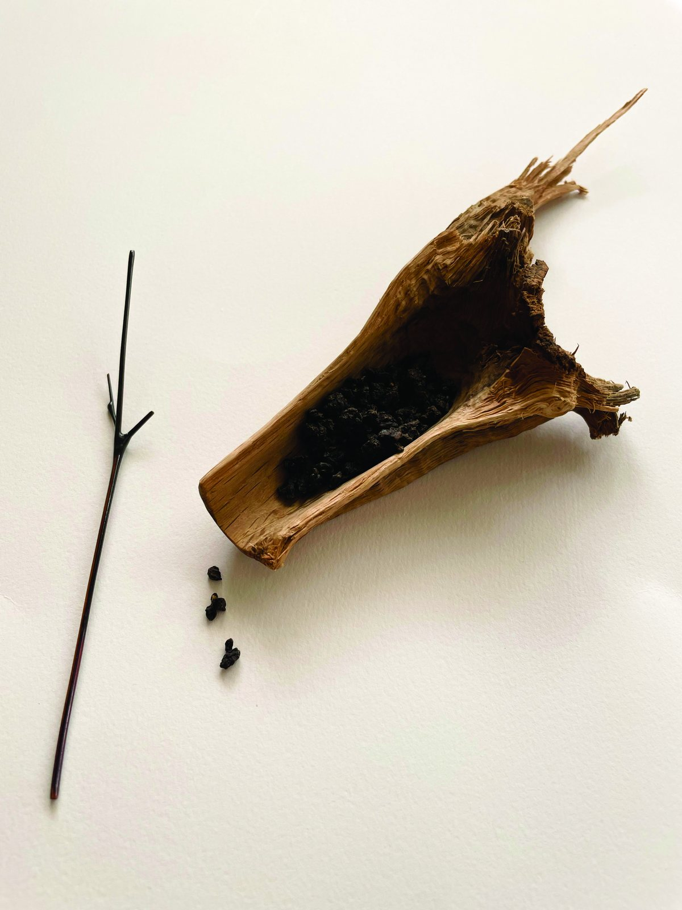
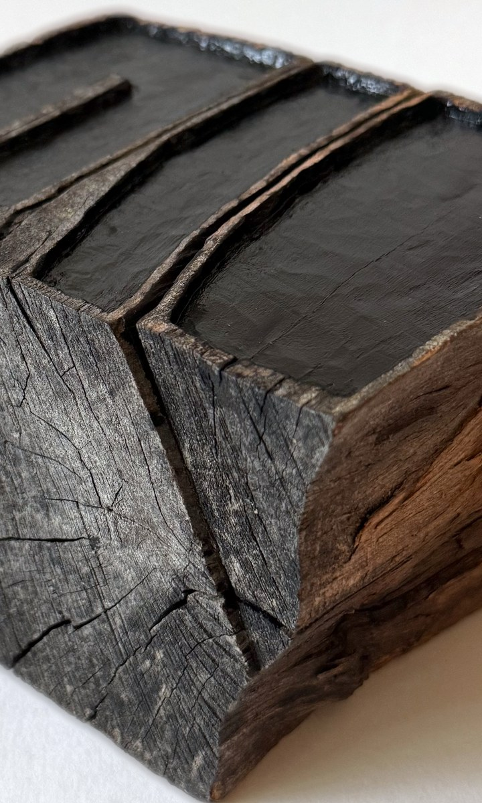
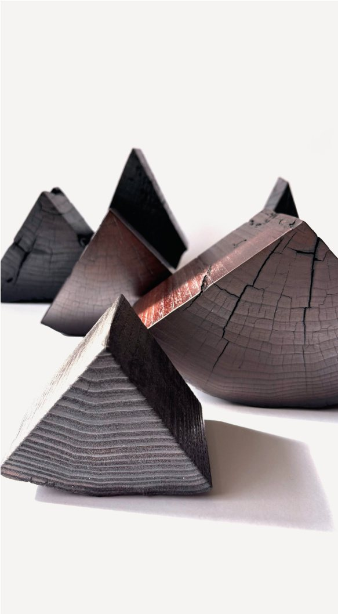
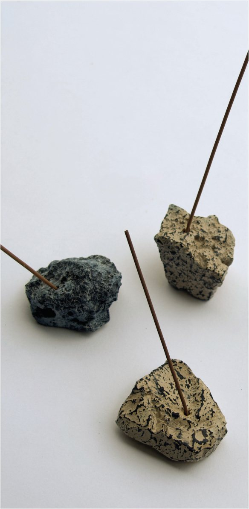
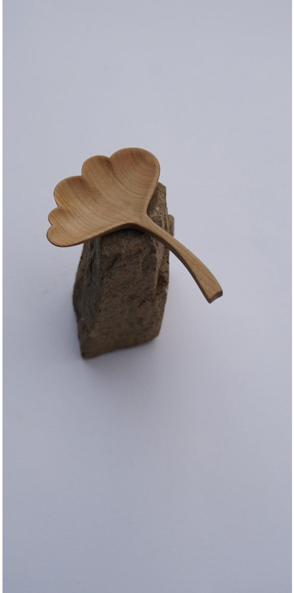
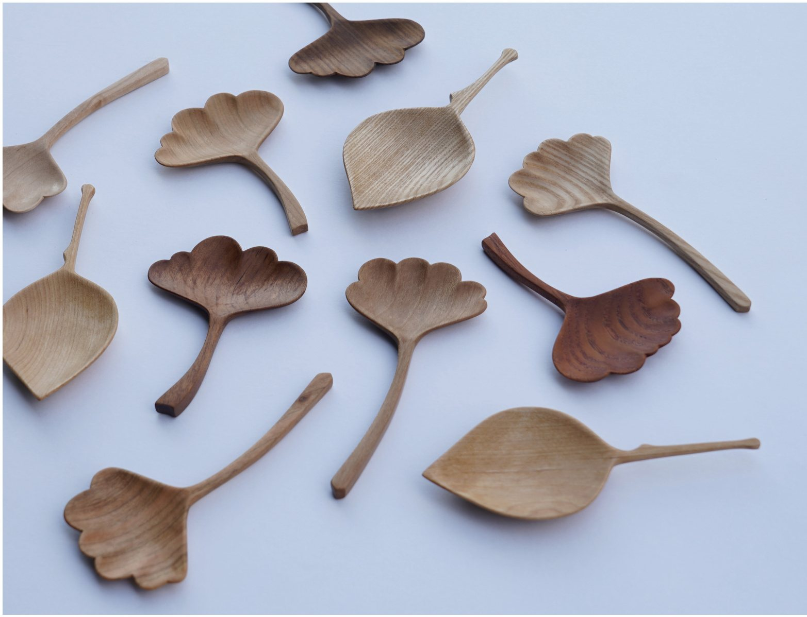
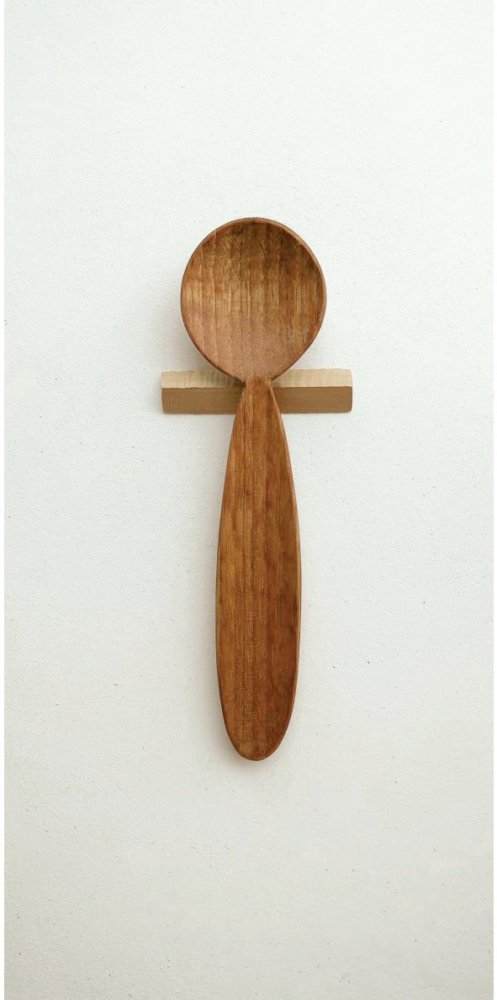
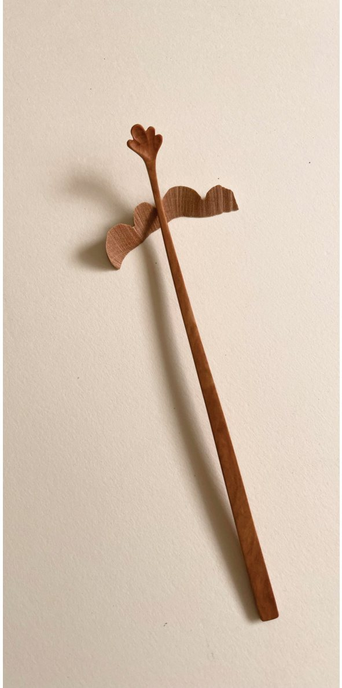
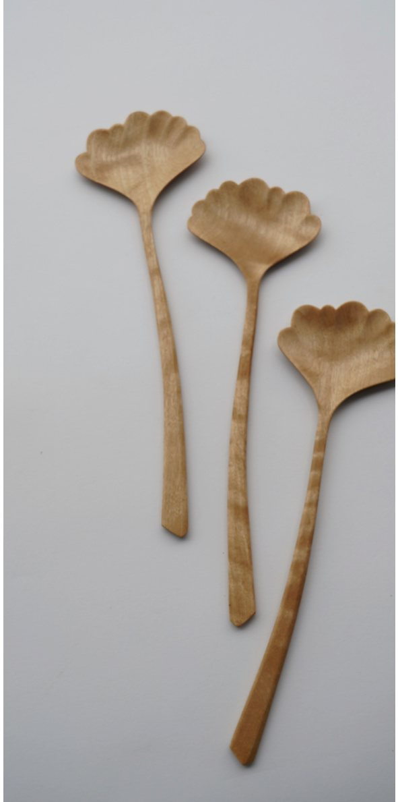

Making
Twelve things, and three ways a thing can meet a hand.
Not a ranking. A piece that sits on a shelf for a year and a spoon that is picked up every morning are doing the same work at different distances.
To live with
곁에 두는 것 — wood that split, cracked, never made it into timber.

Gyeol결
Gyeol — lacquer결 (옻칠)
Times, Not One하나 아닌 시간들 The Time of Bark껍질의 시간
The Time of Bark껍질의 시간
A Place for Scent향의 자리 A Wooden Plane나무 비행기
A Wooden Plane나무 비행기To reach for
손이 가는 것 — carved for the table, and for the hand before it.

Leaf잎사귀
Leaf잎사귀 · another view Cloud Bowl구름그릇
Cloud Bowl구름그릇
Moon Spoon달 스푼
Leaf Tea Scoop잎사귀 차시
Leaf Salad Server잎사귀 샐러드 서버To use every day
매일 쓰는 것 — the pieces that meet a hand most often.